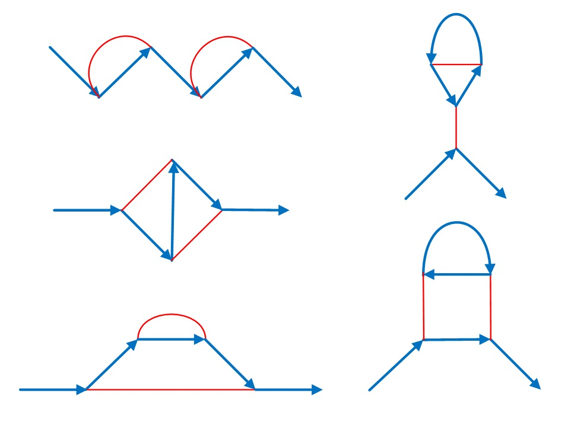

Let $F(n)$ be the number of connected graphs with blue edges (directed) and red edges (undirected) containing:
For example, $F(4)=5$ because there are $5$ graphs with these properties:

You are also given $F(8)=319$.
Find $F(50\,000)$. Give your answer modulo $1\,000\,000\,007$.
NOTE: Feynman diagrams are a way of visualising the forces between elementary particles. Vertices represent interactions. The blue edges in our diagrams represent matter particles (e.g. electrons or positrons) with the arrow representing the flow of charge. The red edges (normally wavy lines) represent the force particles (e.g. photons). Feynman diagrams are used to predict the strength of particle interactions.